| 日付 | 2026年8月6日（木） - 2026年8月10日（月） | ||||||||||
|---|---|---|---|---|---|---|---|---|---|---|---|
| 山域 | 中央アルプス | ||||||||||
| メンバー | 単独 | ||||||||||
| 山行形態 | 4泊5日避難小屋、テント泊 | ||||||||||
| アクセス | 電車、バス、タクシー | ||||||||||
| ルート (Map) |
|
4日目
早起きして4時過ぎに出発。濡れたものを取り入れて畳んでいたら時間がかかってしまった。
これほど稜線から下ったところにある小屋なのに水場はない。水の残量は2.4Lほど。まあ順調だ。
遠くに街の明かりが見える。
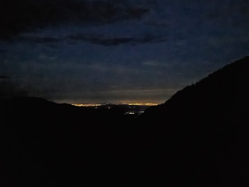
本日も御嶽山の姿がきれいに見えている。
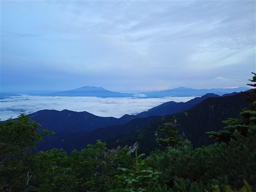
越百山の頭上の雲がオレンジ色に染まりだしている。
ちょっと日の出には間に合わないか。
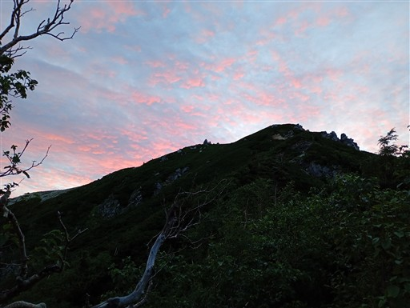
真中左のピークが本日目指す安平路山。右奥は恵那山だ。
こちらの山々もオレンジ色に輝きだす。
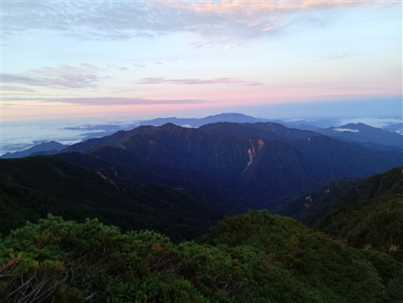
越百山に到着。
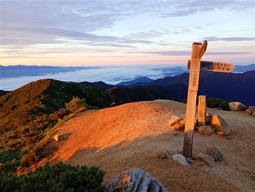
ちょうど日の出の時間。日の出の瞬間は見られなかったが、まあ間に合ったと言って良いだろう。
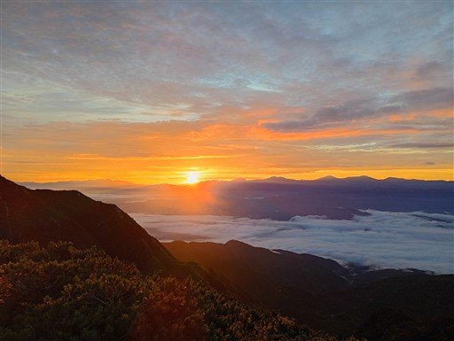
南駒ヶ岳と仙涯嶺。昨日、苦労して越えてきた山々だ。
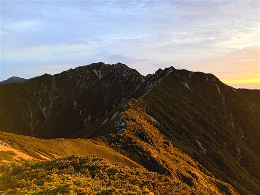
南アルプス。稜線だけがきれいに見えている。
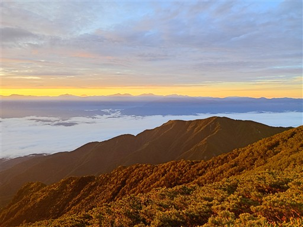
今日は富士山がきれいに見えている。
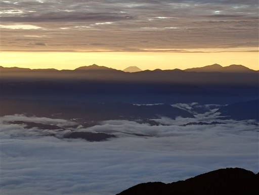
反対側の景色。山の影が見えている。
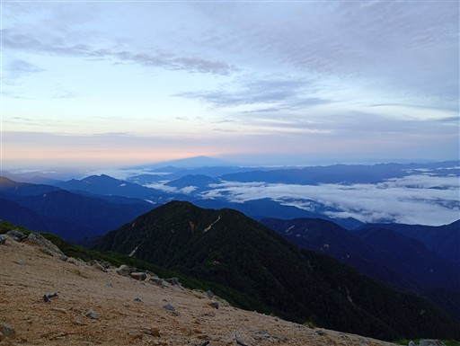
景色を楽しんだら南越百山に向けて歩を進める。
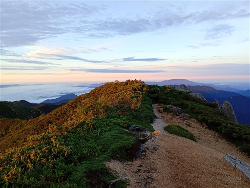
早速、ハイマツなどの藪から始まる。かなり歩きにくい道で全く行程が捗らない。
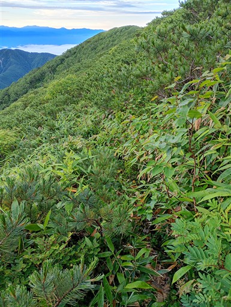
すぐ近くの南越百山が果てしなく遠く感じる。
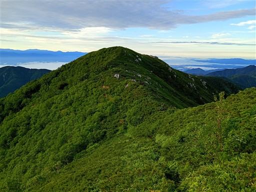
と思ったら、途中から藪が刈り払われている。これはありがたい。
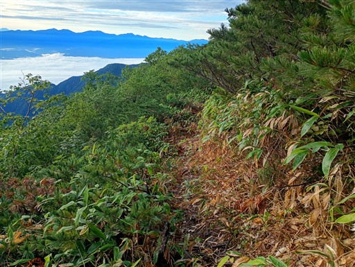
刈り払いされた道に入ってからは歩行速度が格段に上がる。
あっという間に南越百山に到着。
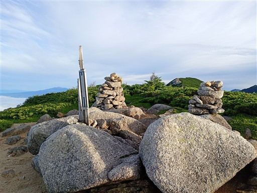
これから向かう稜線が見えている。安平路山が遠く感じる。
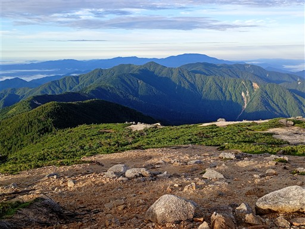
踏み跡は薄く辿るのが難しい。
どこでも歩ける斜面だが、あちらこちらにトウヤクリンドウが咲いていて気を使う。
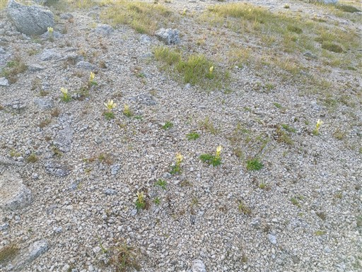
樹林帯の中に入る。笹はきれいに刈られている。
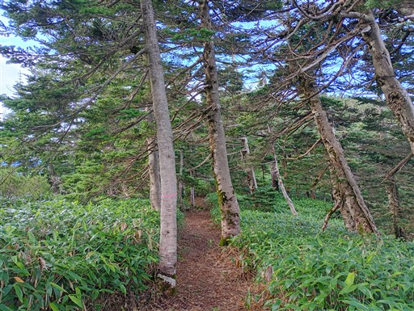
大崩落地。チョコチョコこういう場所が現れるのは南ア深南部の風景と少し似ている。
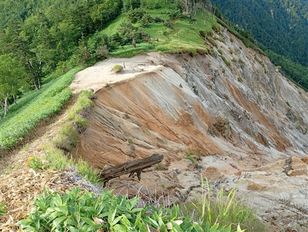
斜面が大きく崩落している。
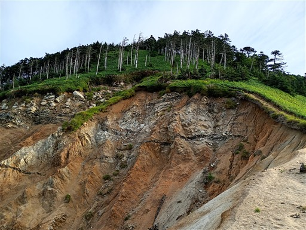
登山道は平和そのもの。
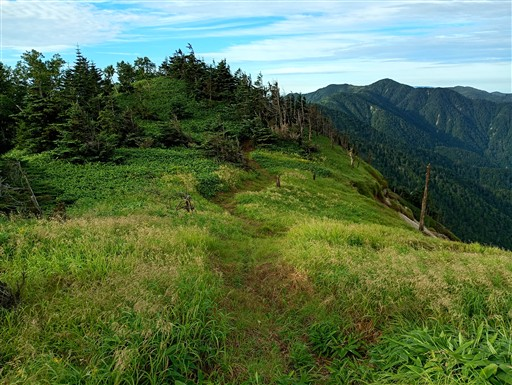
奥念丈岳に到着。標高2303m。
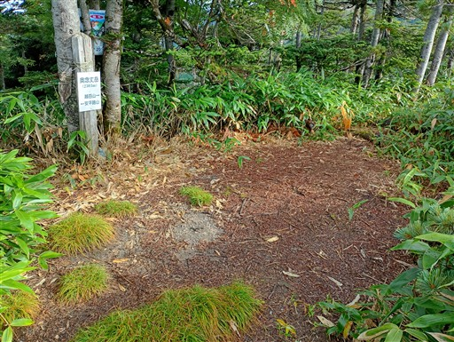
標識には「→越百山 ←安平路山」としか書かれていないが、念丈岳に向かう明瞭な登山道が見える。
これだと安平路山に向かうと勘違いしてこの斜面を下る人が出てくるかも。
さすがに、こんな場所に来る人がそんな初歩的なミスはしないとは思うが。
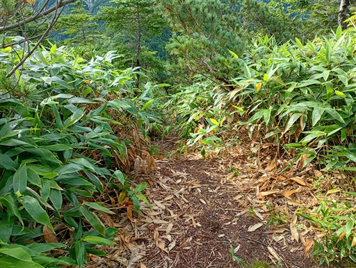
さて、ここからが問題の稜線。尾根は完全に笹薮に覆われている。
笹の刈り払いは奥念丈岳までであった。
それでも距離の長い奥念丈岳まで高速道路だったのはものすごくありがたかった。
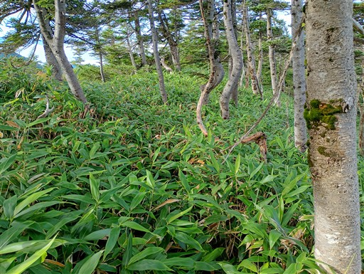
古い標識は見当たるが、登山道は全くない。
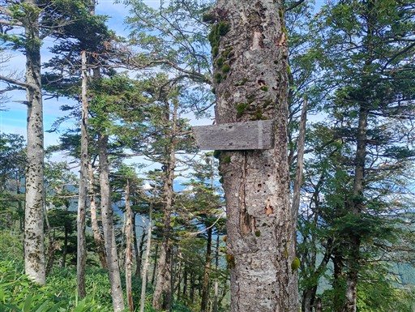
笹の海が広がる。
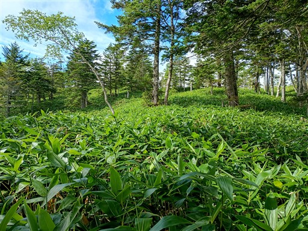
ここの笹は硬い、濃い。
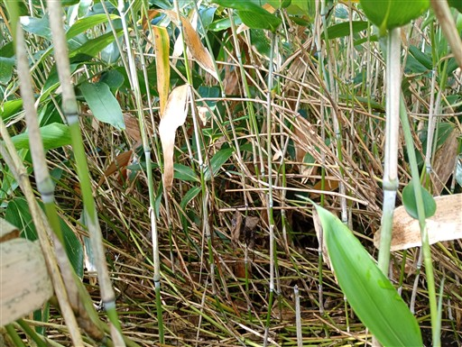
そして高い。
稜線に木が一本あって迂回するだけで方向感覚を失う。
久しぶりにコンパスを出した。
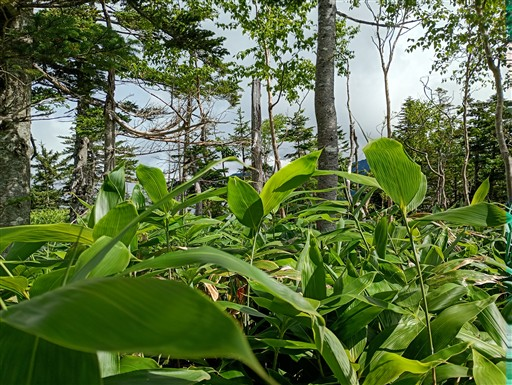
この辺りが袴腰山山頂。誰かのストックが掛かっている。
山頂標識があるのか分からないが、探す気力もない。
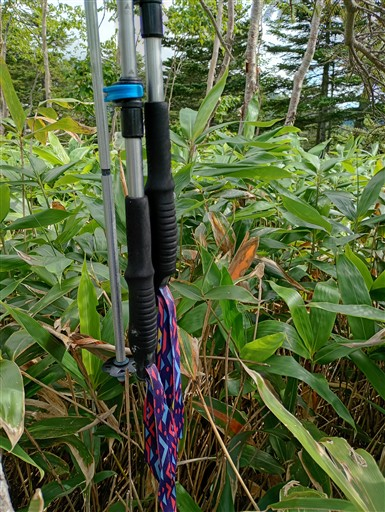
稜線上はわずかな踏み跡がある場所も多い。獣道と思われる。
適当に拾って進んでいく。
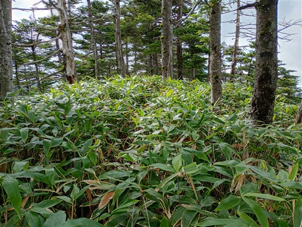
所々、窪地に水が溜まっている。誤って2回、はまってしまう。
濡れた笹で元々、靴はだいぶ濡れている。
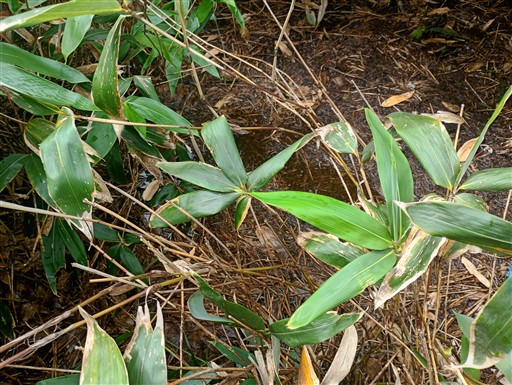
目の前に聳える浦川山。笹薮は下りよりも登りが難しい。
あそこを登れる気がしない。
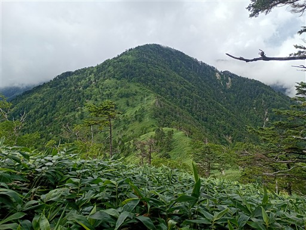
稜線から外れた場所に笹の無い区間がある。
そちらに逃げてみたがどうにもならず、再び笹の中に突っ込む。
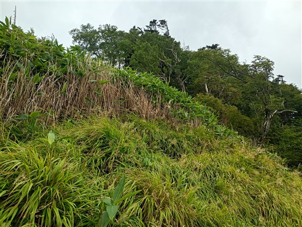
ピンクリボンをところどころで見かけるが、登山道がある訳ではない。
スズメバチがかなり多い。あちこちで周囲を旋回して飛んでいる。
何もしなければ攻撃してこないとは思うが、休んだり地図をみたりするのも困難だ。
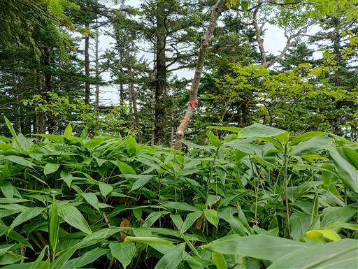
この辺りが浦川山山頂。あの斜面を登り切ったのは自信になった。
安平路山まで到達できる目途がついた。
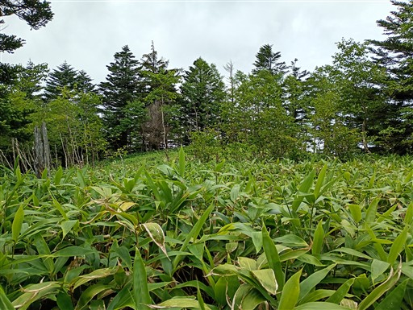
あとは安平路山まで同じ要領で進むだけ。
藪山愛好家ではないし、笹薮漕ぎの経験は少ない。
でもここまでの歩行でだいぶ慣れてきた。平泳ぎの要領で笹をかき分けると効率的だ。
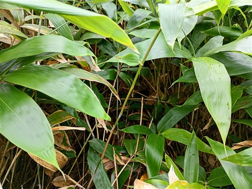
安平路山までは樹木が多い。
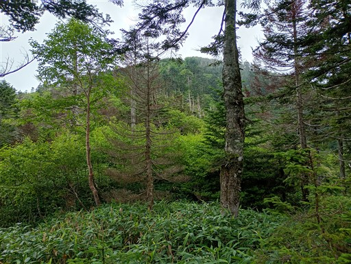
幼木帯。迂回が難しく真ん中を突破。
最後はルート取りを誤り、ちょっと左に迂回しすぎてしまう。
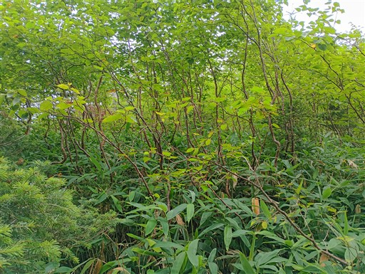
何とかして安平路山に到着する。標高2363m。
奥念丈岳から7時間、ちょっと時間がかかり過ぎだ。
過去にこの稜線を突破した人は本当に尊敬する。
自分は突破したというより、家に帰るために歩くしかなかった、という感じ。
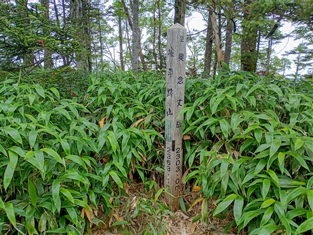
ここからは天国の道になるかと思ったらそうでもない。
ただ踏み跡は明瞭なため、地獄でもない。
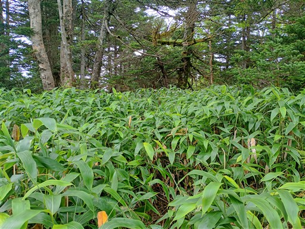
ピンクリボンもちゃんとある。まぁ先の稜線にもピンクリボン自体はあったけれど…
ただ、この辺りは笹がものすごく濡れている。カッパもスパッツも着用しているが
あっという間に靴の中が完全に水浸しになってしまった。やっぱり地獄の道だ。
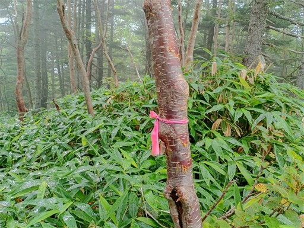
突然、笹が刈り払われている場所に出てくる。水場の標識があるので行ってみる。
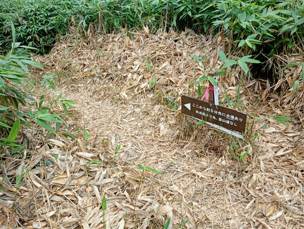
安平路山からの道は笹薮なのに、水場までの道はきれいすぎるくらい整備されている。
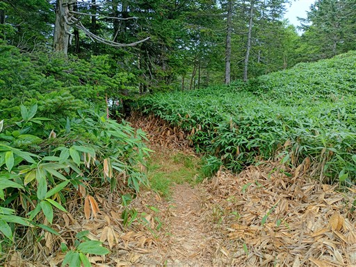
水場があった。残りの水は1.2L。
明日の水場まで持つ算段ではあったけれど、これで水を豊富に使える。
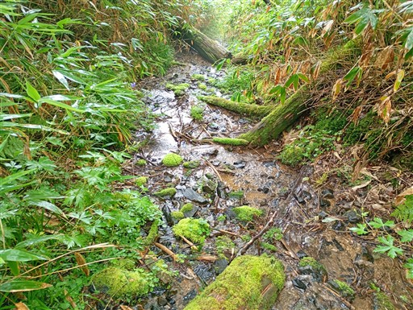
そして、安平路避難小屋に到着する。
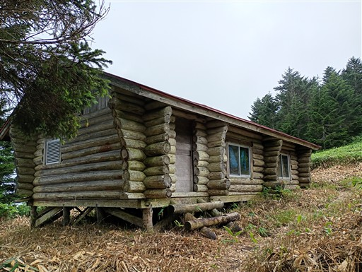
入口の扉は壊れている。
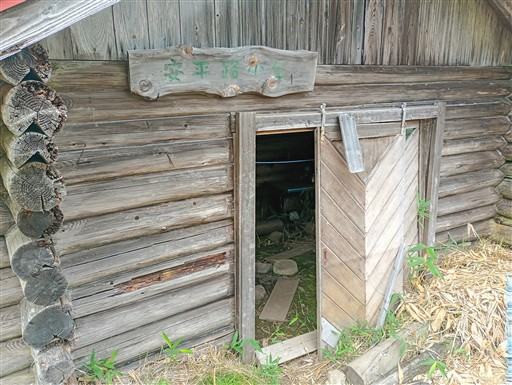
土間にヒカリゴケがあるとか。
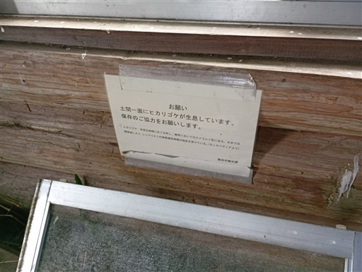
これのこと？
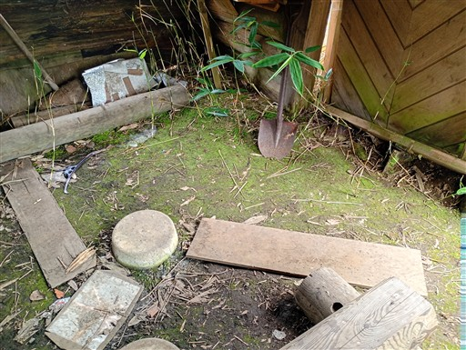
内部にもう一つ扉があるが、こちらはドアノブが壊れている。
奥に銀マットが敷かれているが、誰もいないようだ。
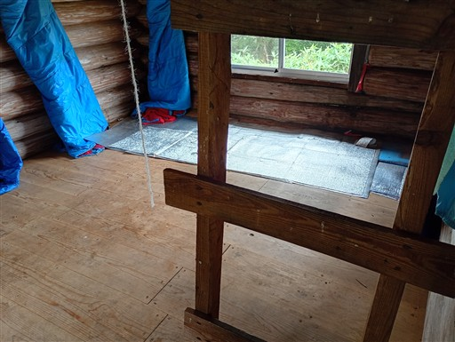
16時ごろ、大雨が降ってくる。本日は間に合った。雨はすぐに止んだ。
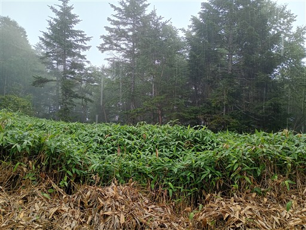
本日はチキンライス。最後の夕飯。
落書帖。読んでみると、安平路避難小屋までの笹が刈り払われたのは最近のようだ。
下山まで笹薮はなさそうで一安心する。